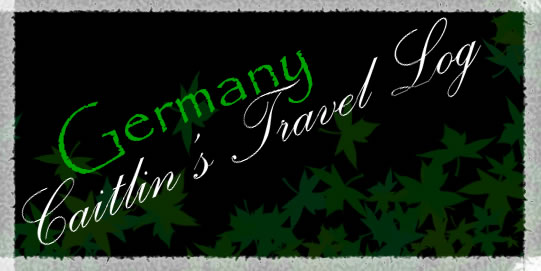
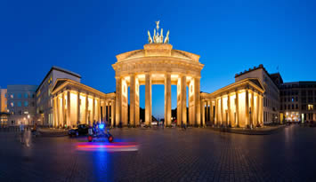
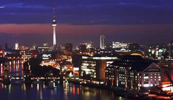
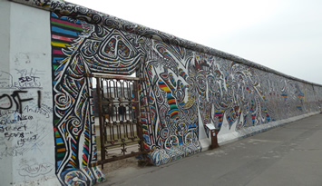
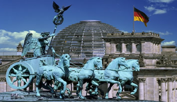

|  | ||||
 |
 |
 |
 |
|
Welcome to Caitlin's Travel Log: GermanyCapital: Berlin Although less clearly defined by geography than the other natural territories of western Europe (such as Italy, the Spanish peninsula, France or Britain), the area broadly identified as Germany has clear boundaries on three sides - the Baltic to the north, the Rhine to the west, the Alps or the Danube to the south. Only to the east is there no natural border (a fact which has caused much strife and confusion in European history). The region becomes associated with the name Germany in the 1st century BC, when the conquest of Gaul makes the Romans aware for the first time that there is an ethnic and linguistic distinction between the Celts (or Gauls) and their aggressive neighbours, the Germans.
Berlin, Germany Berlin is not only the capital city of Germany but at the same time the biggest city of the Federal Republic with over 889 square kilometers. At the moment there are living about 3.5 million people.As capital city, Berlin has a very turbulent and diverse past, which can be seen and felt even today at many places in the city. Simultaneously the city is full of live and brings together a lot of different trends and worlds. In few other German cities there can be found more different people and that many styles as there are in Berlin. It is this diversity and the pure happiness for live that rules the city and makes it unique.Berlin also is a city of young people and students. Many young Germans want to come to Berlin for their studies and there are also a lot of foreign students coming to Germany and get excited for the atmosphere and the attitude towards life they find in Berlin. Even in the ancient times of the city different sovereigns and kings, like for example Friedrich III., have chosen Berlin as their headquarters. The city was growing rapidly and during the Industrial Revolution it had become the fourth largest city in Europe. This growth continued during the German Reich and the Weimar Republic. During the Third Reich Berlin was going through bad times and was headquarters for the Nazi propaganda. During the Second World War the city center was almost completely destroyed. After the war ended Berlin was divided in different zones that later formed the separation in DDR and BRD. Some 50 years later Germany and Berlin were separated till in 1990 there was the reunification.  Things to do?Catch a ride to the Reichstag’s domeThe Reichstag is home to Germany’s parliament, the Bundestag, and a free lift ride to its roof terrace offers spectacular views over the city and close-ups of the modern, Norman Foster–designed glass dome powering from the historic building. Pick up a free audioguide and learn about surrounding sights, the building and the workings of the parliament while moseying up the dome’s spiralling ramp. The glass aims to create a sense of political transparency. Book way ahead or hope for no-shows on the day of your visit. Stroll the East Side GalleryA colourful memorial to freedom, the East Side Gallery sits along the Spree River and is the longest remaining section of the Berlin Wall. Shortly after its fall in November 1989, more than 100 artists from all over the world turned it into an open-air gallery covered in declarations of peace and other, often politically minded murals.  Getting AroundThe S-Bahn is often the fastest way to cover long distances. To figure out in which direction a train is going, check the name of the final destination on the sign hanging above the track. There are three main S-Bahn lines in central Berlin: The Cross-Town runs east and west across the middle of Berlin, passing through stations such as Zoo and Alexanderplatz, and is commonly traveled by visitors. It connects former East and West Berlin, as well as the main international train stations. It also stops near most of Berlin’s major museums and attractions.  HistoryFounded in the 13th century, Berlin has had an eventful history. Excavations from 2008 suggest that the city may be even older than was previously assumed: state archaeologists have discovered an oak beam that probably dates back to 1183.
©Caitlin Bero 2015 |
||||